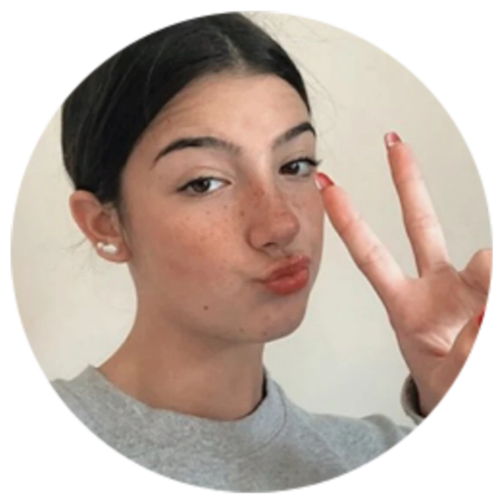

Bianca
online
Olá, sou um bot online para atendimentos de algumas dúvidas. Caso queira falar com um dos ADMs após efetuar o pedido do passe, você será redirecionado para o WhatsApp oficial do ADM.
Veja algumas dúvidas abaixo:
1️⃣ COMO RECEBO O PASSE
2️⃣ O QUE PRECISA PARA COMPRAR O PASSE
3️⃣ SER UM REVENDEDOR